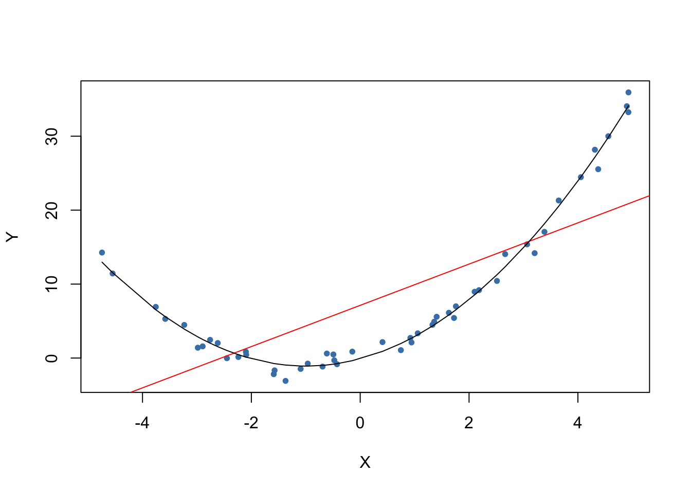

2.4 The Least Squares Assumptions
OLS performs well under a quite broad variety of different circumstances. However, there are some assumptions which need to be satisfied in order to ensure that the estimates are normally distributed in large samples (we discuss this in Chapter 2.5.).
Key Concept 4.3
The Least Squares Assumptions
\[Y_i = \beta_0 + \beta_1 X_i + u_i \text{, } i = 1,\dots,n\] where
- The error term \(u_i\) has conditional mean zero given \(X_i\): \(E(u_i|X_i) = 0\).
- \((X_i,Y_i), i = 1,\dots,n\) are independent and identically distributed (i.i.d.) draws from their joint distribution.
- Large outliers are unlikely: \(X_i\) and \(Y_i\) have nonzero finite fourth moments.
Assumption 1: The Error Term has Conditional Mean of Zero
This means that no matter which value we choose for \(X\), the error term \(u\) must not show any systematic pattern and must have a mean of \(0\). Consider the case that, unconditionally, \(E(u) = 0\), but for low and high values of \(X\), the error term tends to be positive and for midrange values of \(X\) the error tends to be negative. We can use R to construct such an example. To do so we generate our own data using R’s built-in random number generators.
We will use the following functions:
- runif() - generates uniformly distributed random numbers
- rnorm() - generates normally distributed random numbers
- predict() - does predictions based on the results of model fitting functions like lm()
- lines() - adds line segments to an existing plot
We start by creating a vector containing values that are uniformly distributed on the interval \([-5,5]\). This can be done with the function runif(). We also need to simulate the error term. For this we generate normally distributed random numbers with a mean equal to \(0\) and a variance of \(1\) using rnorm(). The \(Y\) values are obtained as a quadratic function of the \(X\) values and the error.
After generating the data we estimate both a simple regression model and a quadratic model that also includes the regressor \(X^2\) (this is a multiple regression model, see Chapter ??). Finally, we plot the simulated data and add the estimated regression line of a simple regression model as well as the predictions made with a quadratic model to compare the fit graphically.
# set a seed to make the results reproducible
set.seed(321)
# simulate the data
X <- runif(50, min = -5, max = 5)
u <- rnorm(50, sd = 1)
# the true relation
Y <- X^2 + 2 * X + u
# estimate a simple regression model
mod_simple <- lm(Y ~ X)
# estimate a quadratic regression model
mod_quadratic <- lm( Y ~ X + I(X^2))
# predict using a quadratic model
prediction <- predict(mod_quadratic, data.frame(X = sort(X)))
# plot the results
plot( Y ~ X, col = "steelblue", pch = 20, xlab = "X", ylab = "Y")
abline( mod_simple, col = "red") #red line = incorrect linear regression (this violates the first OLS assumption)
lines( sort(X), prediction )
The plot shows what is meant by \(E(u_i|X_i) = 0\) and why it does not hold for the linear model:
Using the quadratic model (represented by the black curve) we see that there are no systematic deviations of the observation from the predicted relation. It is credible that the assumption is not violated when such a model is employed. However, using a simple linear regression model we see that the assumption is probably violated as \(E(u_i|X_i)\) varies with the \(X_i\).
Assumption 2: Independently and Identically Distributed Data
Most sampling schemes used when collecting data from populations produce i.i.d.-samples. For example, we could use R’s random number generator to randomly select student IDs from a university’s enrollment list and record age \(X\) and earnings \(Y\) of the corresponding students. This is a typical example of simple random sampling and ensures that all the \((X_i, Y_i)\) are drawn randomly from the same population.
A prominent example where the i.i.d. assumption is not fulfilled is time series data where we have observations on the same unit over time. For example, take \(X\) as the number of workers in a production company over time. Due to business transformations, the company cuts jobs periodically by a specific share but there are also some non-deterministic influences that relate to economics, politics etc. Using R we can easily simulate such a process and plot it.
We start the series with a total of 5000 workers and simulate the reduction of employment with an autoregressive process that exhibits a downward movement in the long-run and has normally distributed errors:3
\[ employment_t = -50 + 0.98 \cdot employment_{t-1} + u_t \]
# set seed
set.seed(123)
# generate a date vector
Date <- seq(as.Date("1951/1/1"), as.Date("2000/1/1"), "years")
# initialize the employment vector
X <- c(5000, rep(NA, length(Date)-1))
# generate time series observations with random influences
for (t in 2:length(Date)) {
X[t] <- -50 + 0.98 * X[t-1] + rnorm(n = 1, sd = 200)
}
#plot the results
plot(x = Date,
y = X,
type = "l",
col = "steelblue",
ylab = "Workers",
xlab = "Time")
It is evident that the observations on the number of employees cannot be independent in this example: the level of today’s employment is correlated with tomorrow’s employment level. Thus, the i.i.d. assumption is violated.
Assumption 3: Large Outliers are Unlikely
It is easy to come up with situations where extreme observations, i.e., observations that deviate considerably from the usual range of the data, may occur. Such observations are called outliers. Technically speaking, assumption 3 requires that \(X\) and \(Y\) have a finite kurtosis.4
Common cases where we want to exclude or (if possible) correct such outliers is when they are apparently typos, conversion errors or measurement errors. Even if it seems like extreme observations have been recorded correctly, it is advisable to exclude them before estimating a model since OLS suffers from sensitivity to outliers.
What does this mean? One can show that extreme observations receive heavy weighting in the estimation of the unknown regression coefficients when using OLS. Therefore, outliers can lead to strongly distorted estimates of regression coefficients. To get a better impression of this issue, consider the following application where we have placed some sample data on \(X\) and \(Y\) which are highly correlated. The relation between \(X\) and \(Y\) seems to be explained pretty well by the plotted regression line: all of the white data points lie close to the red regression line and we have \(R^2=0.92\).
Now go ahead and add a further observation at, say, \((18,2)\). This observation clearly is an outlier. The result is quite striking: the estimated regression line differs greatly from the one we adjudged to fit the data well. The slope is heavily downward biased and \(R^2\) decreased to a mere \(29\%\)!
Double-click inside the coordinate system to reset the app. Feel free to experiment. Choose different coordinates for the outlier or add additional ones.
The following code roughly reproduces what is shown in figure 4.5 in the book. As done above we use sample data generated using R’s random number functions rnorm() and runif(). We estimate two simple regression models, one based on the original data set and another using a modified set where one observation is changed to be an outlier and then plot the results. In order to understand the complete code you should be familiar with the function sort() which sorts the entries of a numeric vector in ascending order.
# set seed
set.seed(123)
# generate the data
X <- sort(runif(10, min = 30, max = 70))
Y <- rnorm(10 , mean = 200, sd = 50)
Y[9] <- 2000
# fit model with outlier
fit <- lm(Y ~ X)
# fit model without outlier
fitWithoutOutlier <- lm(Y[-9] ~ X[-9])
# plot the results
plot(Y ~ X)
abline(fit)
abline(fitWithoutOutlier, col = "red")